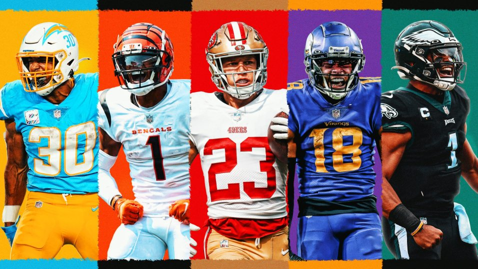
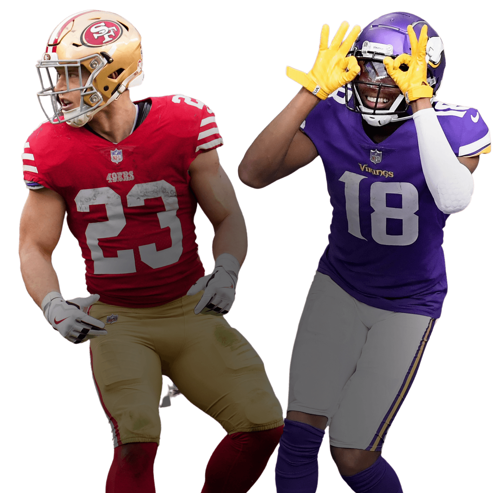
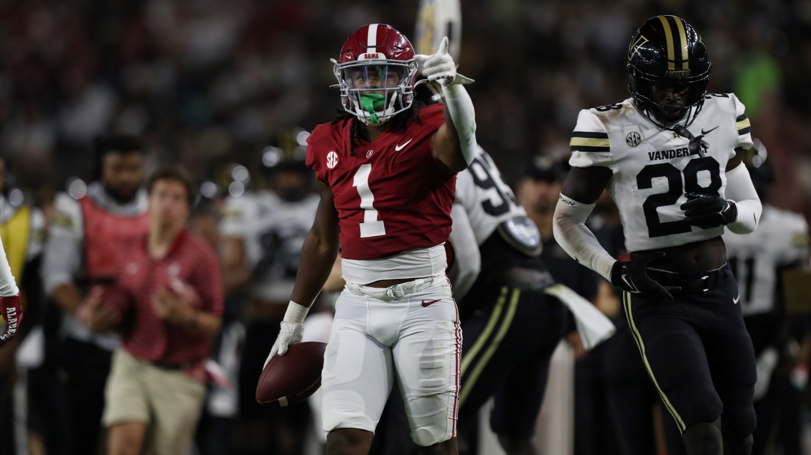
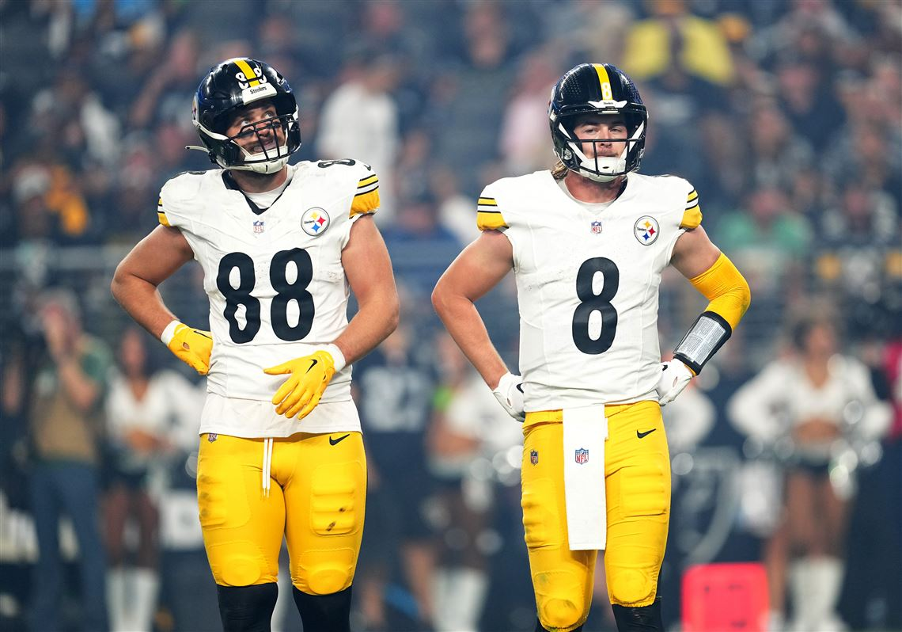
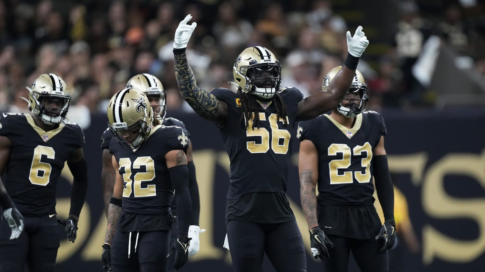

Don't lose sleep over drafting your winning team!
Welcome to your shortcut for fantasy football success. We’ve crafted a simple yet effective round-by-round strategy to keep you in contention each week — even if you forgot to study at all. Our roster-building approach should give you a lineup full of reliable performers with some high-upside players sprinkled in, which will probably get you noticed in your draft chat.

Image via PFF.com-In order: Austin Ekeler, Ja'Marr Chase, Christian McCaffery, Justin Jefferson, and Jalen Hurts. All top scorers in fantasy football in 2022 and are in the upper echelon at their position heading into the 2023 season.
The following plan is best applied to a 12-team, point-per-reception (PPR) league using the following starting lineup: one quarterback, two running backs, two wide receivers, one tight end, one flex player (RB/WR/TE), one defense, a kicker and seven bench players. However, this blueprint should translate to standard-scoring formats and leagues with just 10 teams with a little adjusting on your part. (Of course, because you’re reading a guide for lazy people, we understand if that’s work you don’t want to do.) Players in each round are expected to be available there based on their average draft position (as of Aug. 31) and are listed in order of preference unless otherwise specified.
Ready? Grab a snack and let’s draft like a pro with minimal effort. Eh, grab two snacks. You’ll probably need them.
The Elites
Round 1
With any luck, you’ve been fortunate enough to get one of the top two picks and have a choice between Justin Jefferson, wide receiver for the Minnesota Vikings, and Christian McCaffrey, running back for the San Francisco 49ers, in that order.

Image via TheFantasyFootballer.com - 49ers runningback Christian McCaffery and Vikings Justin Jefferson lead the way for the consensus one and two pick in most draft boards.
Didn’t snag those top spots? No sweat! Keep an eye out for superstar wideouts Ja’Marr Chase and Tyreek Hill. Later in the first round, focus on Chargers running back Austin Ekeler, Chiefs tight end Travis Kelce, Bills wide receiver Stefon Diggs or running backs Saquon Barkley (Giants) or Bijan Robinson (Falcons). Reliable picks toward the end of the first round include Dallas wide receiver CeeDee Lamb and Browns running back Nick Chubb.
All these players should give you a solid foundation to build from.
Round 2
If you nabbed a running back in Round 1, swing for a wide receiver here, and vice versa. Balance is your secret weapon (for not having to think too hard).
Among running backs, your first choice should be Tony Pollard. With Ezekiel Elliott off to the New England Patriots, Pollard takes the lead for the Dallas Cowboys. In 2022, he finished as the eighth-best fantasy running back despite competition for snaps. From Weeks 7 to 16, he showed his true potential, hinting at an exciting role in the 2023 ground game for one of the NFC’s favorites. If Pollard is taken, consider Tennessee’s Derrick Henry or Pittsburgh’s Najee Harris as a backup plan.
For those eyeing wide receivers, target Garrett Wilson of the New York Jets. As a standout rookie, he saw a 25 percent target share, ranking in the top 10 in targets. With the team’s quarterback upgrade to Aaron Rodgers, Wilson is poised for a big year. Plus, he got a huge share of end-zone targets last year, which could point to well more than four touchdowns in 2023. Amon-Ra St. Brown of the Detroit Lions or Jaylen Waddle of the Miami Dolphins are your next-best options at the position.
Round 3
In this round, it’s all about you. Want a wide receiver? Check out Tee Higgins or DK Metcalf, both 2022 standouts. Higgins thrived in Cincinnati’s offense, catching 74 of 109 targets for 1,029 yards and seven touchdowns. And Metcalf has a high upside in Seattle, given his league-high 23 end-zone targets.
Want a go-to tight end? Mark Andrews is your guy. With Lamar Jackson back in Baltimore and his health restored, Andrews should be able to return to his 2021 form. Aside from Kelce, Kansas City’s unrivaled star, Andrews is the most reliable choice at tight end, with the potential to bring you fantasy glory.
If you’re eyeing a running back, Joe Mixon’s your man. He bounced back from a slow start to finish strong for the Bengals, averaging numbers down the stretch similar to those of top-five players at the position. He’s a workhorse with the spark to deliver consistent production.
Round 4
Jahmyr Gibbs could be a standout rookie runner for the Lions. The first-round draft pick had an impressive college track record, first at Georgia Tech and then Alabama, showcasing his dual-threat abilities. He ranked second in Pro Football Focus’s receiving grades in his first two seasons in college and then led Alabama with 44 receptions for 444 yards as a junior. Gibbs also displayed explosiveness, ranking fifth in PFF’s breakaway run rate. With his receiving skills and big-gain potential, he’s a high-upside fantasy pick poised to make an immediate impact in Detroit, a strong running team a year ago that no longer has top backs Jamaal Williams and D’Andre Swift.
If you are instead looking for a veteran, select Green Bay’s Aaron Jones. Despite a dip in receiving yards per game, his 59 catches and increased targets highlight his versatility, and he could be a rock for new starting quarterback Jordan Love.

Image via University of Alabama Atheltics- Jahymir Gibbs (No. 1) put up dominant stats at Alabama and as the number twelve overall pick he has high expectations in Detroit.
Capable Starters
Round 5
Justin Fields is a fantasy cheat code as a dual-threat quarterback. The Bears’ starter ran for 1,143 yards and eight touchdowns in 2022, then got an upgrade at wide receiver when the team traded for DJ Moore and an upgrade on the offensive line late in the preseason when the Bears acquired Dan Feeney from the Miami Dolphins. Feeney was the fifth-highest-rated guard during the 2023 preseason, according to Pro Football Focus, and he allowed just one sack while playing for the New York Jets in 2022.
Other choices for this round include wide receivers Christian Watson (Packers), Diontae Johnson (Steelers) and Brandon Aiyuk (49ers). Overcoming injuries, Watson excelled in Green Bay as a rookie, making 41 catches for 611 yards and seven touchdowns in 14 games. Johnson had 16 red-zone targets plus 14 in the end zone yet somehow ended the season with zero receiving touchdowns (after having 15 in the previous two seasons). Don’t expect that to happen again. Aiyuk set career highs in targets (114), catches (78), receiving yards (1,015) and touchdowns (eight) in 2022.
"Skill positions are back in focus. You probably want to keep the number of running backs and wide receivers balanced."
Round 6
This is the round to look for a running back with upside.
Rachaad White’s late-season rise for Tampa Bay showcased his potential. He dominated snaps and outperformed teammate Leonard Fournette when it mattered most, a clear sign of his upward trajectory. Fournette has since been released, and White’s versatile role and impressive receiving stats make him attractive here.
Javonte Williams was limited to four games for the Broncos in his second year; he tore multiple knee ligaments in Week 4 against the Las Vegas Raiders. Before the injury, he carried the ball 47 times for 204 yards, averaging 3.5 yards per rush after contact. He also caught 16 passes on 22 targets for 76 receiving yards. Though Denver’s offensive struggles could persist, Williams’s expected return and solid metrics make him a high-upside choice.
Round 7
Already have your quarterback in Fields? James Cook of the Buffalo Bills is a gem at running back. He is explosive (he had six runs of 20 or more yards in 2022) and adept at receiving (he caught 21 of 32 targets for 180 yards and a touchdown), giving him a high ceiling with a solid floor of performance. His second-year potential with pass-catching upside makes him a calculated risk even with Damien Harris on the roster.
If you are still in the market for a quarterback, check in on Deshaun Watson of the Cleveland Browns. He is a low-risk, high-reward opportunity. Despite not playing much over the past two years after accusations of sexual misconduct, his track record as a top-five fantasy scorer early in his career is undeniable. Following a suspension and a rusty return in 2022, Watson still managed 971 passing yards and eight total touchdowns in his last five games.
Round 8
Now, let’s talk tight ends. Pittsburgh’s Pat Freiermuth caught 63 of 98 targets for 732 yards in 2022, his second pro season. While his two touchdowns might seem unimpressive, he had six end-zone targets; that’s double the tight end average. Plus, quarterback Kenny Pickett, after becoming the Steelers’ starter in Week 5, targeted his tight ends 93 times. Only five passers targeted their tight ends more often. If you already drafted Andrews, Minnesota Vikings rookie receiver Jordan Addison and Washington Commanders running back Brian Robinson Jr. offer plenty of upside.

Image via Pittsburgh Post-Gazette - Pat Freiermuth (No. 88) and Kenny Pickett (No. 8). As Pickett enteres his sophomore season he will heavily rely on his favorite target, Freiermuth, meaning an increase of points for the young tight end as well.
Round 9
Skill positions are back in focus. You probably want to keep the number of running backs and wide receivers balanced, so what your roster looks like at this point will dictate your next move. Players to consider here include running backs Samaje Perine and Zach Charbonnet plus young receivers Zay Flowers and Skyy Moore.
Perine, now in Denver, excelled in a third-down role with the Bengals last year, and his performance from Weeks 11 to 13, when he averaged 23.6 fantasy points, showcased his upside. He could have some big games as Javonte Williams ramps back up from his injury. Charbonnet, a rookie drafted in the second round by the Seattle Seahawks, has a dual-threat skill set.
Flowers, a rookie picked in the first round, could emerge as Lamar Jackson’s second wide receiver target behind Rashod Bateman, and a new scheme under offensive coordinator Todd Monken should signal more passing volume. Moore, a second-year receiver poised to have a bigger role for Kansas City, averaged a gain of almost seven yards per reception after the catch, the sixth most last season.
Round 10
For roster depth, go with Kansas City running back Jerick McKinnon or a wide receiver such as Nico Collins (Texans) or Jameson Williams (Lions). Williams will miss six games after a gambling-related suspension, but if you have wide receiver depth, he could be an intriguing pick. If you still need a tight end or want depth at that position, too, select Houston’s Dalton Schultz.
Schultz finished as the third-best tight end in 2021, catching 78 passes for Dallas for 808 yards and eight touchdowns. He slipped in 2022, finishing with 57 catches for 577 yards and five touchdowns, missing two games with a knee injury.
Now he’s in Houston, where there is considerably less competition for the ball. Rookie quarterback C.J. Stroud seems likely to lean on Schultz and targeted him four times this preseason, once in the end zone.
United States map showing where the least efficient offenses in the country are. Danger zones are determined by the highest ranked player in the ESPN Fantasy Full PPR rankings. The areas highlighted in red are meant to serve as a warning to drafters that these offenses lack playmakers. Proceed to draft from the offenses of Arizona, Denver, Houston, Chicago, Indianapolis, Washington, Carolina (Charlotte), and Tampa Bay with caution.
Round 11
Get ready to add some pizazz to your draft, ideally with Pittsburgh Steelers second-year running back Jaylen Warren.
Warren, an undrafted free agent, had impressive efficiency stats as a rookie despite a limited role, including a 50 percent success rate — the percentage of runs when a running back gains at least 40 percent of the yardage needed on first down, 60 percent on second or 100 percent on third or fourth downs. He also averaged 1.2 receiving yards per route run. The league averages for running backs last season were a 46 percent success rate and 1.0 receiving yards per route run.
Jaguars rookie running back Tank Bigsby is another option this round.
Round 12
Don’t worry if some of your rivals snicker: The New Orleans Saints defense/special teams is a sneaky smart pick. The Saints have talent — according to Pro Football Focus, they have the fourth-best linebacking corps heading into the season — and they face a relatively soft schedule to start the year.
Their first nine opponents are the Tennessee Titans, Carolina Panthers, Green Bay Packers, Tampa Bay Buccaneers, New England Patriots, Houston Texans, Jacksonville Jaguars, Indianapolis Colts and Chicago Bears. Just one of those teams, the Jaguars, is expected to have a winning record.

Image via the New Orleans Saints - Saints defense has been dominant for years and with many favorable matchups this season, they will be a highly touted defense to draft.
The Rest of 'Em
Round 13
The Panthers took wide receiver Jonathan Mingo, an enticing prospect coming off a breakout college season at Mississippi, in the second round. He boasts 4.46-second speed in the 40-yard dash and explosive jumping ability. Plus, the lack of high-volume receivers in Carolina — the Panthers’ offense returns just two players with more than 30 receptions in 2022 — opens the door to opportunity. Perhaps it doesn’t come right away, but Mingo’s athleticism and early draft status make him a tantalizing stash with potential upside.
If someone beat you to Mingo, look at Bills rookie Dalton Kincaid if you want another tight end or Denver rookie wide receiver Marvin Mims Jr.
Round 14
Buried on the Browns’ depth chart in 2022 behind Nick Chubb and Kareem Hunt, second-year running back Jerome Ford might get a chance to shine after the team didn’t bring back Hunt. Ford showed his potential in college, totaling 1,539 yards from scrimmage with 20 total touchdowns for Cincinnati in 2021.
Interesting backup (fantasy) quarterbacks such as Green Bay’s Jordan Love and San Francisco’s Brock Purdy could also be available, though you might want to act in the previous round if you’re attached to one of them.

Gif via Tenor.com, Video via Fox - Brock Purdy came was drafted as Mr. Irrelevant by the 49ers last season. When the Niners two other QBs got injured, Purdy led San Fran all the way to the NFC championship and was an injury away from leading his team to the Super Bowl.
Round 15
Kendre Miller, a third-round draft pick by the Saints, has high upside as a runner, though he’s dealing with a hamstring injury. He averaged 6.2 yards per carry for TCU last season, and if he’s healthy he should get a good look with Alvin Kamara suspended for the first three games of the season.
“I like the player. I like his downhill running style,” Saints Coach Dennis Allen said. “I think he’s got really good feet, I think he’s got really good contact balance. And he’s got the speed to take it the distance if he breaks free in the open field, so there’s a lot of qualities about him that I like. And, look, I don’t know that they used him as much out of the backfield at TCU, but I think he’s got that skill set.”
If you passed on the Saints earlier, you could still get a decent defense/special teams unit such as Pittsburgh, the New York Jets, Washington or Kansas City.
Round 16
Take the best kicker on the board. Then grab another snack, because you’re finished.
You can now draft you team comfortably and be knowledgable in every round of the draft. Have fun drafting and good luck!